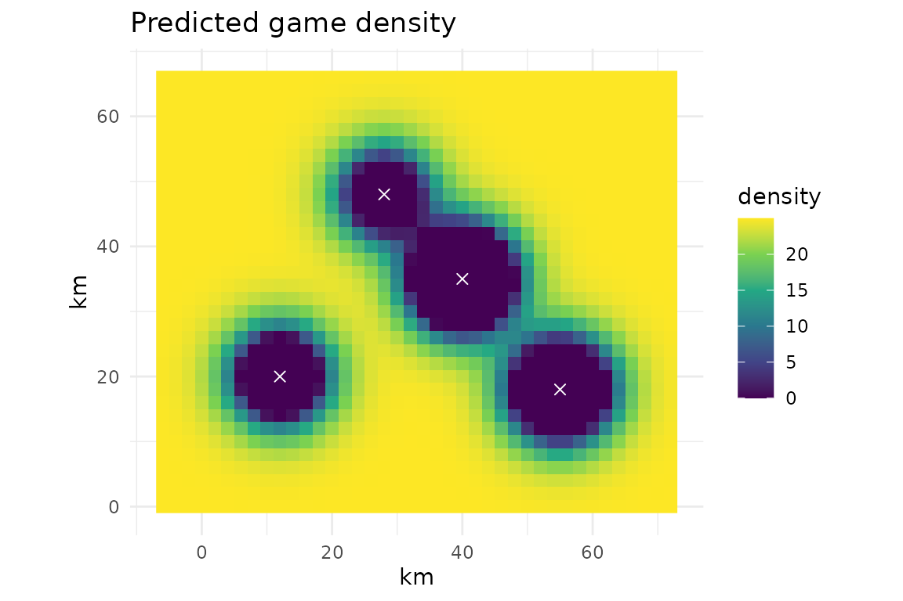

The idea
Model-based methods work the other way round from the index-based ones. Instead of comparing two sites, they use the biology of the species to estimate how many animals can be taken each year without shrinking the population. You then compare that estimate with the offtake you actually observe. If the observed offtake is larger than the estimate, hunting is likely too heavy (Adounke et al. 2026).
Each function returns a small table with a sustainable
column that is TRUE when the observed harvest sits at or
below the estimated safe level.
| Function | Estimates the safe harvest from | Source |
|---|---|---|
ot_pro() |
density, growth rate, lifespan | Robinson & Redford 1991 |
ot_pbr() |
a cautious population size and growth rate | Wade 1998 |
ot_msy() |
the logistic growth curve | Schaefer 1954 |
ot_samse() |
growth rate plus year-to-year variability | Manlik et al. 2022 |
ot_biode() |
settlement locations and hunting effort | Levi et al. 2009 |
We use the bundled example data duiker_demography
(life-history values for a few duikers) and
manu_settlements (hunting villages on a map). Both are made
up for the examples.
duiker_demography
#> species density_k annual_take lifespan b a w rmax
#> 1 blue duiker 40 9.0 10 0.55 1.0 10 0.30
#> 2 red duiker 12 3.5 11 0.50 1.5 11 0.22
#> 3 yellow-backed duiker 3 0.8 12 0.45 2.0 12 0.15Production model, ot_pro()
This is the most common model in bushmeat studies. The safe harvest, called the production \(P\), is
\[P = 0.6 \, K \, (\lambda_{\max} - 1) \, F.\]
Reading it piece by piece:
- \(K\) is the density the habitat can support (carrying capacity).
- \(0.6\,K\) is the density at which the population grows fastest, so it produces the most surplus.
- \(\lambda_{\max}\) is the fastest yearly growth the species can manage. The part \((\lambda_{\max} - 1)\) is the surplus it adds each year.
- \(F\) is a safety fraction that depends on how long the animal lives: 0.6 for short-lived species (about 5 years), 0.4 for medium-lived (5 to 10 years) and 0.2 for long-lived species (over 10 years). Long-lived animals bounce back slowly, so you take a smaller share.
If you do not have lambda_max, you can let the package
work it out from three life-history numbers using
ot_lambda_max(): the number of female young per female per
year (b), the age at first reproduction (a)
and the age at last reproduction (w). This solves Cole’s
(1954) equation, a standard way to turn basic life-history into a growth
rate.
ot_lambda_max(b = 0.55, a = 1, w = 10)
#> [1] 1.542758Now the model itself. Here we pass the life-history columns, so
lambda_max is computed for us, and we use
lifespan to set the safety fraction F.
ot_pro(duiker_demography,
k = density_k,
harvest = annual_take,
b = b, a = a, w = w,
longevity = lifespan)
#> <offtake: Pro (Robinson & Redford production model)> (model-based)
#> Reference: Robinson & Redford (1991)
#>
#> # A tibble: 3 × 5
#> lambda_max f production harvest sustainable
#> * <dbl> <dbl> <dbl> <dbl> <lgl>
#> 1 1.54 0.4 5.21 9 FALSE
#> 2 1.41 0.2 0.590 3.5 FALSE
#> 3 1.32 0.2 0.117 0.8 FALSEThe production column is the estimated safe harvest,
harvest is what was observed, and sustainable
compares the two.
Potential biological removal, ot_pbr()
ot_pbr() comes from marine mammal management and is
deliberately cautious. The safe removal is
\[\mathrm{PBR} = N_{\min} \times \tfrac{1}{2} R_{\max} \times F_R,\]
where \(N_{\min}\) is a low,
cautious estimate of population size (so you do not over-count), \(R_{\max}\) is the maximum yearly growth
rate, and \(F_R\) is a recovery factor
between 0.1 and 1 that you lower when you want to be extra careful. If
you give a point estimate n and its coefficient of
variation cv, the function works out \(N_{\min}\) for you as the lower end of the
plausible range.
ot_pbr(duiker_demography,
rmax = rmax,
removal = annual_take,
n = density_k,
fr = 0.5)
#> <offtake: PBR (potential biological removal)> (model-based)
#> Reference: Wade (1998)
#>
#> # A tibble: 3 × 6
#> nmin rmax fr pbr removal sustainable
#> * <dbl> <dbl> <dbl> <dbl> <dbl> <lgl>
#> 1 40 0.3 0.5 3 9 FALSE
#> 2 12 0.22 0.5 0.66 3.5 FALSE
#> 3 3 0.15 0.5 0.112 0.8 FALSEMaximum sustainable yield, ot_msy()
This is the classic fisheries benchmark. It assumes the population follows the logistic curve, where growth is fastest at half of carrying capacity and slows as the population fills up. The largest steady catch it can support is
\[\mathrm{MSY} = \frac{rK}{4},\]
with \(r\) the growth rate and \(K\) the carrying capacity. If you also give
the current abundance n, the function reports the surplus
at that abundance too, which is the sustainable yield right now rather
than at the ideal population size.
ot_msy(duiker_demography,
r = rmax,
k = density_k,
harvest = annual_take)
#> <offtake: MSY (logistic maximum sustainable yield)> (model-based)
#> Reference: Schaefer (1954)
#>
#> # A tibble: 3 × 5
#> r k msy harvest sustainable
#> * <dbl> <dbl> <dbl> <dbl> <lgl>
#> 1 0.3 40 3 9 FALSE
#> 2 0.22 12 0.66 3.5 FALSE
#> 3 0.15 3 0.112 0.8 FALSEStochastic safe mortality, ot_samse()
Real environments are not steady. Good years and bad years come and
go, and that variability eats into how much you can safely take.
ot_samse() follows this idea, after Manlik et al. (2022):
it projects the population many times with random good and bad years,
taking a fixed number \(H\) each
year,
\[N_{t+1} = \max\!\left(0,\; N_t\, e^{r_t} - H\right), \qquad r_t \sim \mathcal{N}(r_{\max}, \sigma_e),\]
and searches for the largest \(H\) that still keeps the population from shrinking on average. Here \(r_{\max}\) is the mean growth rate and \(\sigma_e\) is how much it swings from year to year.
Because it uses simulation, you supply the mean growth rate
(rmax), how much it varies from year to year
(sd_env), the observed removal, and a starting population
size. The result is usually a bit lower than what a formula without
variability would suggest, which is the point.
# add a variability value and a starting size to the example data
samse_data <- transform(duiker_demography,
sd_env = 0.2,
n0 = density_k)
ot_samse(samse_data,
rmax = rmax,
sd_env = sd_env,
removal = annual_take,
n0 = n0,
nsims = 200,
years = 40,
seed = 1)
#> <offtake: SAMSE (sustainable anthropogenic mortality, stochastic)> (model-based)
#> Reference: Manlik et al. (2022)
#> Note: Simplified stochastic re-implementation of the SAMSE principle; not the original Vortex-based procedure.
#>
#> # A tibble: 3 × 6
#> n0 rmax sd_env samse_limit removal sustainable
#> * <dbl> <dbl> <dbl> <dbl> <dbl> <lgl>
#> 1 40 0.3 0.2 11.1 9 TRUE
#> 2 12 0.22 0.2 2.03 3.5 FALSE
#> 3 3 0.15 0.2 0.267 0.8 FALSEThis is a simplified version of the original method, which was built in the Vortex software and includes more biological detail. Use it as a careful screen, and cite Manlik et al. (2022) for the full approach.
Spatial source-sink model, ot_biode()
The models above treat the landscape as one pot. In practice hunting
is not spread evenly: it is heavy near villages and light far away.
ot_biode(), after Levi et al. (2009), captures this. Near a
settlement the animals get depleted (a sink), while remote areas stay
full and quietly resupply the hunted zones (a source).
You give the location of each settlement and how many hunters live there, plus a few parameters for the species and the hunting. The model then predicts animal density at every point of the map,
\[N(x, y) = \left[K^{\theta}\left(1 - \frac{e\,d\,h}{r}\sum_c P_c\,\varphi(\delta_c)\right)\right]_+^{1/\theta}, \qquad \varphi(\delta) = \frac{\exp\!\left(-\delta^2 / 2\sigma^2\right)}{2\pi\delta + 1}.\]
In words: each settlement \(c\) presses down on the animals around it. That pressure grows with its hunter population \(P_c\) and fades with distance \(\delta_c\) through the kernel \(\varphi\) (how far hunters roam is set by \(\sigma\)). Add up the pressure from all settlements, and what the population can still support is whatever is left of its carrying capacity \(K\). The \([\,\cdot\,]_+\) just means the density cannot go below zero. You do not need to handle any of this by hand; the function does it across a grid.
res <- ot_biode(manu_settlements,
x = x_km,
y = y_km,
humans = hunters,
k = 25,
r = 0.07,
hphy = 40,
kill_rate = 0.1,
sigma = 6,
resolution = 2)
res
#> <offtake: Biode (Levi et al. spatial source-sink model)> (model-based)
#> Reference: Levi et al. (2009)
#>
#> # A tibble: 1 × 7
#> n_settlements mean_density min_density frac_extirpated frac_below_half_k
#> * <int> <dbl> <dbl> <dbl> <dbl>
#> 1 4 19.5 0 0.118 0.193
#> # ℹ 2 more variables: cpue <dbl>, sustainable <lgl>The summary reports, among other things, frac_extirpated
(the share of the map pushed to local extinction) and
mean_density. The full predicted surface is available with
ot_biode_surface(), ready for mapping, and the catch per
unit effort each village can expect is in
ot_biode_cpue().
head(ot_biode_surface(res))
#> # A tibble: 6 × 3
#> x y density
#> <dbl> <dbl> <dbl>
#> 1 -6 0 25.0
#> 2 -6 2 25.0
#> 3 -6 4 25.0
#> 4 -6 6 25.0
#> 5 -6 8 25.0
#> 6 -6 10 25.0
ot_biode_cpue(res)
#> # A tibble: 4 × 5
#> settlement x y humans local_cpue
#> <int> <dbl> <dbl> <dbl> <dbl>
#> 1 1 12 20 60 0.00588
#> 2 2 40 35 110 0.00402
#> 3 3 55 18 90 0.00580
#> 4 4 28 48 45 0.00617If you have ggplot2 installed, the surface maps nicely as a raster, with the depletion halos around the settlements.
library(ggplot2)
surface <- ot_biode_surface(res)
ggplot(surface, aes(x, y, fill = density)) +
geom_raster() +
geom_point(data = manu_settlements,
aes(x_km, y_km), inherit.aes = FALSE,
colour = "white", shape = 4, size = 2) +
scale_fill_viridis_c(name = "density") +
coord_equal() +
labs(title = "Predicted game density", x = "km", y = "km") +
theme_minimal()
Which one to use
There is no single best model. The production model is a good default when you have density and basic life-history. PBR is handy when you mostly trust a population count and want to stay cautious. MSY is familiar from fisheries. SAMSE is worth reaching for when year-to-year swings matter. Biode is the one to use when the spatial pattern of hunting is the whole point. In practice it helps to try more than one and see whether they agree.
References
Adounke, G. R. M. et al. (2026) Systematic review of sustainability assessment approaches for wildlife exploitation. Biological Conservation 313, 111606.
Robinson, J. G. & Redford, K. H. (1991) Sustainable harvest of Neotropical forest mammals.
Wade, P. R. (1998) Calculating limits to the allowable human-caused mortality of cetaceans and pinnipeds. Marine Mammal Science 14, 1 to 37.
Levi, T., Shepard, G. H., Ohl-Schacherer, J., Peres, C. A. & Yu, D. W. (2009) Modelling the long-term sustainability of indigenous hunting in Manu National Park, Peru. Journal of Applied Ecology 46, 804 to 814.
Manlik, O. et al. (2022) A stochastic model for estimating sustainable limits to wildlife mortality in a changing world. Conservation Biology 36, e13897.